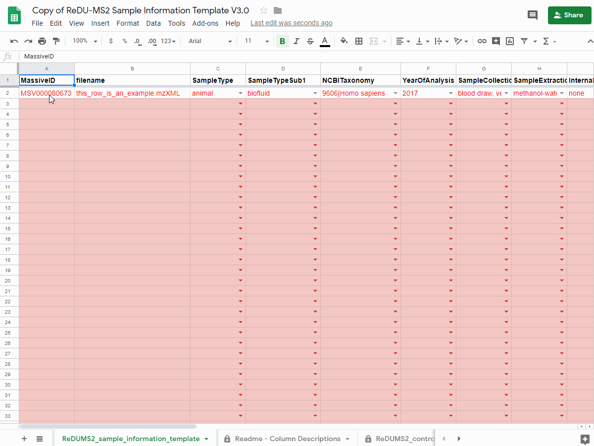
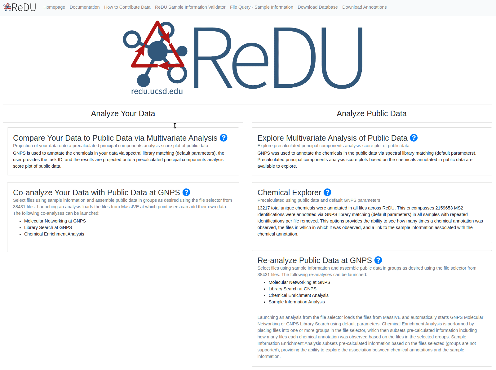

How to Contribute to ReDU
Required Items
- A free MassIVE account is required to contribute data and a free GNPS account is required to analyze data.
- Mass spectrometry data (MS/MS data)
- Data converted to open-format (.mzXML or .mzML)
- Data uploaded to MassIVE link here as a public dataset
- ReDU-compliant sample information
Detailed Step-by-step Instructions
1. Sign-up for a free MassIVE and GNPS account
2. Mass spectrometry data (MS/MS data)
links to info on data conversion
2.2 Upload mass spectrometry data to GNPS/MassIVE and create a MassIVE ID
- Launch the "Submit your data" workflow to submit your data to MassIVE - link here) - to create a MassIVE ID. The title must beginning with "GNPS"
- You will receive an email when the workflow has completed.
- After complete, make the MassIVE ID public by clicking the "make public" button.
- Please click the "convert spectra" button to expedite inclusion in ReDU.
links to info on uploading data and making datasets in MassIVE
3. ReDU-compliant sample information
3.1 Manual completion of the ReDU sample information template
- Navigate to the ReDU Sample Information Template - link here
- Save a copy of the sample information template by going to "File - Make a copy" into a personal google drive
how to make a copy of the sample information template - .gif

- Fill in sample information using drop-downs when applicable (grey columns at the end of the template are automatically entered using formulae).
filling in the sample information template - .gif

notes on using the sample information template
- One template is required per MassIVE ID
- It is highly recommended to fill the template in Google Sheets
- ReDU uses a controlled vocublary - the accepted terms are listed in the "ReDUMS2_controlled_vocabulary" tab per column. If you require terms that are not avaliable, please raise an issue on GitHub - link here.
- Columns and values are defined on the readme tab in the template.
- The filename in the sample information file must match the data uploaded to MassIVE (.mzML or .mzXML). Any conflict between identically named files will result in their exclusion.
- When copying and pasting from another spreadsheet, please copy + special paste so as to not chance the cell formulae or formatting.
3.2 Validation of the ReDU sample information template using the drag-and-drop validator
- When complete, delete all extra rows of the template
- Download from Google Sheets as a tab separated text file using "File-Download as" and selecting "Tab-seperated values..."
how to download the sample information template

- Navigate to the ReDU Sample Information Validator - link here
- Drag-and-drop or select your sample information file into the validator.
- A message will indicate if the files passes or not.
- Non-adherant information is displayed in the "Sample Information Validation Errors" panel - the row, column, and the accepted terms are listed.
- If errors occur, then please correct the non-adherant information in the template and repeat from 2C
how to validate the sample information template

- Upon passing the validator, rename the file to be exactly "gnps_metadata.tsv"
- The filename must be gnps_metadata.tsv - this step is critical
notes on validator use
- If corrections or updates are necessary, please make them accordingly and upload the new validated sample information file named "gnps_metadata.tsv". ReDU will automatically import the most recent version of the "gnps_metadata.tsv" file (files cannot be deleted by users from MassIVE).
- It is suggested to make a seperate directory on your computer to store each MassIVE IDs sample information template.
3.3 Upload ReDU-compliant sample information (after validation) to the corresponding MassIVE accession
- Navigate to the MassIVE ID created and click on the "add files" button.
- Use the Drag-and-Drop upload option to add the validated sample information file named "gnps_metadata.tsv"
- Select the validated sample information file (named exactly "gnps_metadata.tsv") into the "Metadata file" folder or "Supplementary file" folder
- Submit the update
check that your data made it into ReDU
- Navigate to ReDU - link here
- Selecting the "DatasetAccession" button which will load all MassIVE accessions avaliable in ReDU
- Check for your MassIVE accession (i.e. MassIVE ID) and confirm the number of files is correct
- Note: GNPS/MassIVE is searched multiple times per day to find new or updated sample information files so it may take some time for your data to appear.
Success
Congrats and thank you for contributing to ReDU! 
Help and Advice
- General Questions or Advice = GNPS Forum - link here
- New Terms, Corrections, Suggestions = GitHub - link here
Last update: May 19, 2020 17:53:34